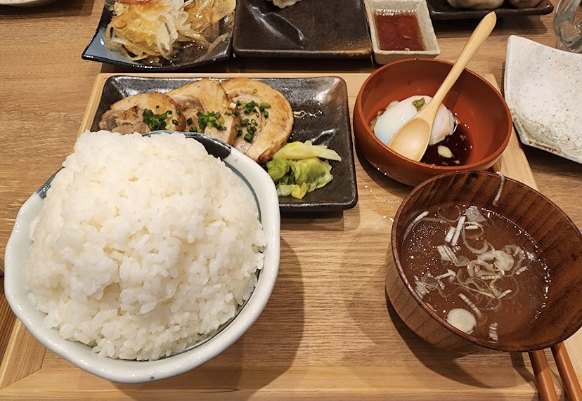
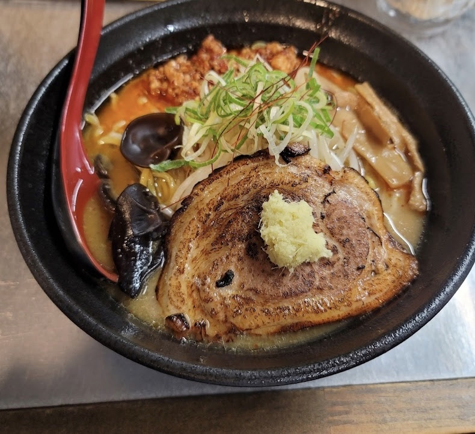
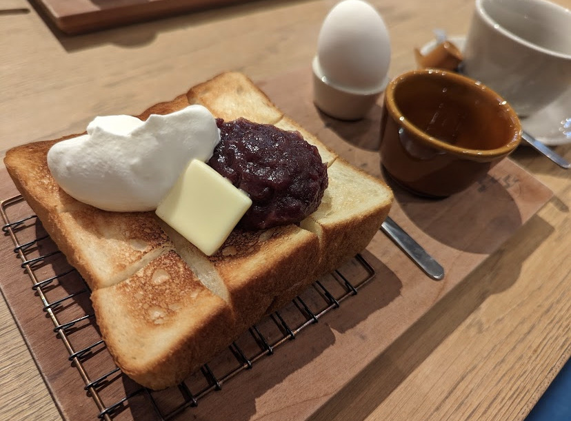
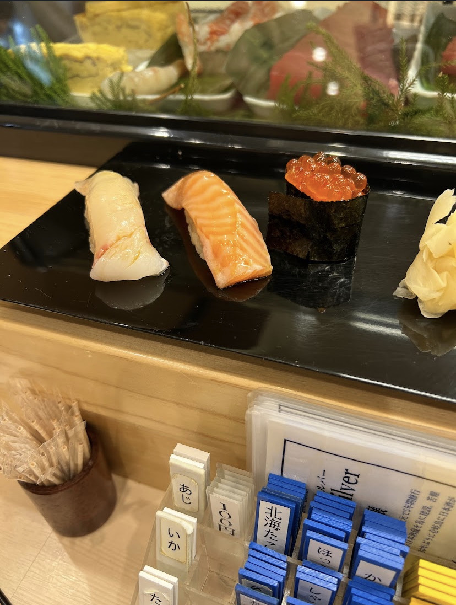
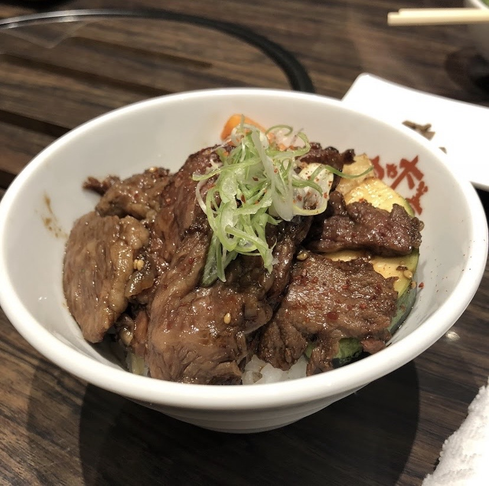

大学生になってから色々な場所で色々なものを食べ、その中でも個人的に印象に残ったものを５つランキング形式で発表します！
第５位
肉汁餃子のダンダダン
☆➎段階評価☆
・美味しさ→★★★☆☆
・価 格→★★☆☆☆
・ボリューム→★★★★★
・行きやすさ→★★★★★
☆総評☆
近くにJR千種駅があるのでフラッと行くことができます！
餃子はとてもジューシー＋ランチで頼むと餃子のほかにもおかずがついてくるので大盛りのご飯でも最後まで飽きずに食べられます。
ランチにしては少し高いが満足度に比べたらお得です。
第４位
エゾ麺ロック
☆➎段階評価☆
・美味しさ→★★★★☆
・価 格→★★★☆☆
・ボリューム→★★★★★
・行きやすさ→★★☆☆☆
☆総評☆
場所は名古屋駅から少し離れた場所にあり、徒歩だと約１５分ほどかかるります。
ピリ辛のスープと麺がマッチングしてスルスルと食べられます。また、ライスのおかわりが自由なのでラーメンだけじゃ物足りない方にもおすすめです。価格は平均１０００円越えなので少しお高めです。
第3位🥉
つばめぱん＆ミルク
☆➎段階評価☆
・美味しさ→★★★★☆
・価 格→★★★★☆
・ボリューム→★★★☆☆
・行きやすさ→★★★☆☆
☆総評☆
場所は名古屋駅から歩いて約７分と近めなところにありますが、いつ行っても行列ができているので待つのが苦手な人はきついかも知れません。
しかし、外はカリッと中はふわふわでくどくない甘みの小倉トーストは絶品です！小倉トーストの他にもフワとろのオムサンドも絶品です！
価格はセット内容と比較すればかなりお得です。
第２位🥈
鮨屋トンボ
☆➎段階評価☆
・美味しさ→★★★★★
・価 格→★★★★☆
・ボリューム→★★★☆☆
・行きやすさ→★★★☆☆
☆総評☆
場所は近くに新栄町駅があるので比較的行きやすいのですが、こちらもよく行列になっています。
こちらのお店ではランチメニューとして目の前で大将がお寿司を握ってもらえ、どれも新鮮でとてもおいしいです。しかし、大食いの人には少しだけ少なく感じてしまうかもしれません。
第１位🥇
肉や大善
☆➎段階評価☆
・美味しさ→★★★★★
・価 格→★★★★★
・ボリューム→★★★★☆
・行きやすさ→★★★★★